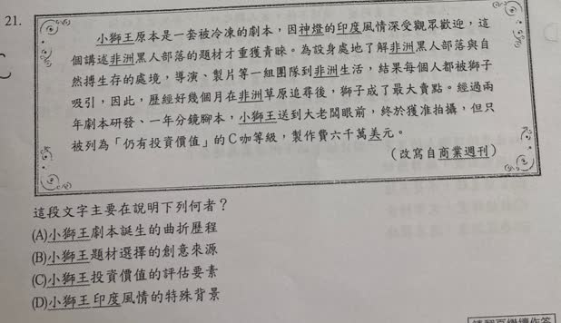

分享原卷｜第21題
完整原題
作答所需文章／材料
小獅王原本是一套被冷凍的劇本，因神燈的印度風情深受觀眾歡迎，這個講述非洲黑人部落的題材才重獲青睞。為設身處地了解非洲黑人部落與自然搏生存的處境，導演、製片等一組團隊到非洲生活，結果每個人都被獅子吸引，因此，歷經好幾個月在非洲草原追尋後，獅子成了最大賣點。經過兩年劇本研發、一年分鏡腳本，小獅王送到大老闆眼前，終於獲准拍攝，但只被列為「仍有投資價值」的C咖等級，製作費六千萬美元。 ——改寫自《商業週刊》這段文字主要在說明下列何者？
(A) 小獅王劇本誕生的曲折歷程
(B) 小獅王題材選擇的創意來源
(C) 小獅王投資價值的評估要素
(D) 小獅王印度風情的特殊背景
先想一想，再查看答案、解說與原圖
原卷作答：C
正確答案：A，小獅王劇本誕生的曲折歷程。
逐項解析
| 選項與原句 | 判讀 | 句意與判斷理由 |
|---|---|---|
| (A) 小獅王劇本誕生的曲折歷程 | 應選 | 能概括被冷凍到最終獲准拍攝的整段發展。 |
| (B) 小獅王題材選擇的創意來源 | 不選 | 只涵蓋部分題材轉換，不能統整全部過程。 |
| (C) 小獅王投資價值的評估要素 | 不選 | 末句提及投資評等與預算，但不是全段核心。 |
| (D) 小獅王印度風情的特殊背景 | 不選 | 印度風情用來說神燈，不是小獅王的主要背景。 |
詳細說明與解題步驟
【依時間梳理全文】
最初：劇本被冷凍，沒有立即拍攝。
轉機：另一作品神燈的異國風情受到歡迎，使非洲題材重獲注意。
調整：團隊到非洲生活，受到獅子吸引，歷經草原追尋後，把獅子變成最大賣點。
研發與結果：兩年劇本研發、一年分鏡腳本，最後才獲准拍攝，且被列為C咖、給定製作預算。
【主旨不能只抓最後一句】
整段從冷凍、重獲青睞、實地體驗、改變賣點，到獲准拍攝，構成劇本形成的曲折歷程，A能涵蓋全篇。
B創意來源只是發展中的一部分；C投資價值只在結尾出現，全文沒有列出一套評估要素；D印度風情是神燈受到歡迎的背景，不是小獅王的主要題材。
題目取自改寫文章，閱讀時依本文敘述判斷主旨，不把改寫內容當成已獨立考證的電影製作史。
核對註記：已依原卷或完整文字核對並獨立解題；對應教材課次未確認，歸綜合。
原圖（僅本題）
